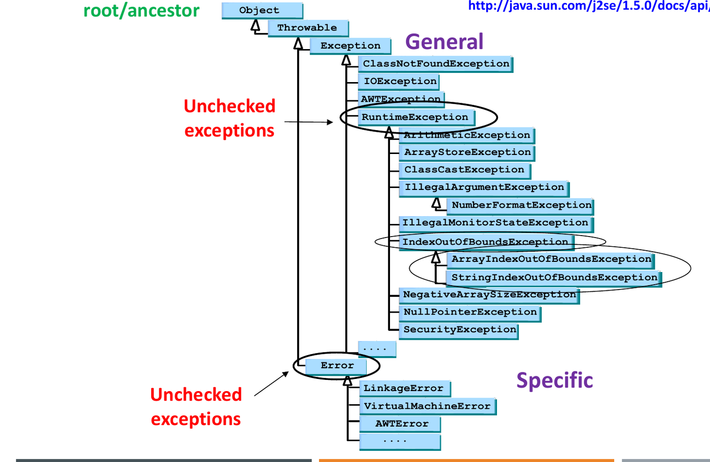

Runtime anomalies—such as lost network connections, missing files, array boundary overruns, or arithmetic division by zero—threaten program correctness. Traditional error handling in procedural languages relies on error return codes and conditional checks, which convolute normal business logic and are easily ignored.
Java’s structured exception handling decouples error-detection logic from error-recovery routines. When an anomalous event occurs, the JVM instantiates and throws an exception object containing diagnostic metadata. Execution aborts the current block and transfers control down the call stack until an appropriate catch handler intercepts it.
1. The Java Exception Hierarchy
All error and exception objects derive from
java.lang.Throwable. The taxonomy branches into two
distinct categories:

java.lang.Throwable
│
┌──────────────────────┴──────────────────────┐
▼ ▼
java.lang.Error java.lang.Exception
(Fatal system failures; │
e.g., OutOfMemoryError, ┌───────────────┴───────────────┐
StackOverflowError) ▼ ▼
java.lang.RuntimeException [Checked Exceptions]
(Unchecked logic/programming (Recoverable external
defects; e.g., NullPointer, hazards; e.g., IOException,
Arithmetic, IndexOutOfBounds) FileNotFoundException)Checked vs. Unchecked Exceptions Matrix
| Characteristic | Checked Exceptions | Unchecked Exceptions (RuntimeException &
Error) |
|---|---|---|
| Root Class | Exception (excluding
RuntimeException) |
Subclasses of RuntimeException and
Error |
| Compiler Enforcement | Mandatory: Must be caught via
try-catch or declared via throws in method
header |
Optional: Compiler does not enforce catch or declare |
| Typical Origin | External environmental failures outside direct program control (e.g., missing file, network drop, SQL failure) | Internal programming logic bugs (e.g.,
NullPointerException, invalid index, divide by zero) |
| Examples | IOException, FileNotFoundException,
ClassNotFoundException, SQLException |
NullPointerException, ArithmeticException,
ArrayIndexOutOfBoundsException,
ClassCastException |
2. Structured Syntax:
try, catch, and finally
try {
// Protected block: code that may throw one or more exceptions
FileInputStream fis = new FileInputStream("data.bin");
int val = 10 / divisor;
} catch (FileNotFoundException e) {
// Specific handler: catches exact match or subclass
System.err.println("File missing: " + e.getMessage());
} catch (ArithmeticException e) {
System.err.println("Math error: " + e.getMessage());
} catch (IOException e) {
// Broader handler placed AFTER specific handlers
System.err.println("General I/O error: " + e.getMessage());
} finally {
// Guaranteed cleanup block: executes under ALL execution paths
System.out.println("Cleanup executed.");
}Critical Rules Governing Catch and Finally Blocks
- Ordering Rule (Specific to General): Subclass catch
blocks must precede superclass catch blocks. Placing
catch (Exception e)beforecatch (IOException e)results in a compilation error: “exception IOException has already been caught”. - First Match Only: When an exception is thrown, the JVM evaluates catch clauses sequentially from top to bottom. It executes the first matching block and bypasses all subsequent catch clauses.
- The Unconditional Guarantee of
finally:- The
finallyblock executes always, whether an exception is thrown or not, whether a caught exception is handled or not, and even if thetryorcatchblock executes areturnstatement. - If a
tryblock returns a value, thefinallyblock executes immediately before the method formally returns control to the caller. - The only circumstance that prevents a
finallyblock from executing is an explicit termination of the JVM viaSystem.exit(0)or catastrophic host OS / power failure.
- The
3. Exception Propagation and Method Contracts
When a method encounters an exceptional condition it cannot recover from, it delegates responsibility to its caller:
throw(Statement): Triggers the immediate instantiation and ejection of an exception object:
throw new IllegalArgumentException("Negative balance");throws(Clause): Appended to a method header to declare that the method may propagate specified checked exceptions up the call stack:
public void parseLog(String path) throws IOException, ParseException
Overriding Rules for Methods Declaring Checked Exceptions
When a subclass overrides a superclass method:
- The subclass method cannot declare broader or new checked exceptions than those declared in the superclass method.
- The subclass method may declare fewer checked exceptions, more specific subclass exceptions, or no checked exceptions at all.
- Unchecked exceptions (
RuntimeException) are unconstrained by this rule.
4. Java File I/O Architecture
Java models file operations via stream abstractions in
java.io:
| Stream Category | Base Abstract Classes | Data Unit | Primary Purpose | Key Concrete Implementations |
|---|---|---|---|---|
| Byte Streams | InputStream / OutputStream |
8-bit byte | Raw binary data, images, media, serialized objects | FileInputStream, FileOutputStream,
BufferedInputStream |
| Character Streams | Reader / Writer |
16-bit char | Text files with character encoding conversion | FileReader, FileWriter,
BufferedReader, PrintWriter |
// Modern idiom: Try-With-Resources (implements java.lang.AutoCloseable)
try (BufferedReader reader = new BufferedReader(new FileReader("input.txt"));
PrintWriter writer = new PrintWriter(new FileWriter("output.txt"))) {
String line;
while ((line = reader.readLine()) != null) {
writer.println(line.toUpperCase());
}
} // Streams automatically closed here without requiring an explicit finally block5. Object
Serialization and the transient Keyword
Serialization transforms an object’s complete in-memory object graph into a portable sequence of binary bytes for storage or network transmission; Deserialization reconstructs identical heap objects from the byte sequence.
import java.io.Serializable;
public class UserSession implements Serializable {
private static final long serialVersionUID = 1L; // Schema version verification
private String username;
private transient String passwordHash; // EXCLUDED from serialization!
private transient Socket connection; // Non-serializable resources excluded
public UserSession(String username, String hash) {
this.username = username;
this.passwordHash = hash;
}
}Serialization Rules and Traps
- The Marker Interface: A class must implement
java.io.Serializable(an interface with zero methods). If a class does not implementSerializable, passing it toObjectOutputStream.writeObject()throwsNotSerializableException. - The
transientModifier: Fields markedtransientare skipped during serialization. When the object is deserialized, transient fields are reset to their default uninitialized values (null,0,false). - Static Fields: Static fields belong to the class Metaspace, not individual object instances. Static variables are never serialized.
- Composed Objects: Every reference field inside a serializable class must also reference a serializable object; otherwise serialization fails at runtime.
6. Tracing
Toolkit: Exception Control Flow & finally
When predicting the output of nested try-catch-finally
blocks under exam conditions:
Step 1: Execute try block sequentially line by line.
├── No exception thrown:
│ Run all try statements ──► Skip catch blocks ──► Run finally ──► Continue after try-catch.
└── Exception thrown at statement X:
Halt try block immediately (all subsequent lines inside try are SKIPPED).
Step 2: Match Exception against catch blocks (top-to-bottom).
├── Catch block matches (thrown object is-a CaughtType):
│ Execute matching catch body ──► Run finally block ──► Continue after try-catch.
└── No catch block matches (or unhandled checked/unchecked exception):
Run finally block ──► Abort current method ──► Propagate exception to caller.
Step 3: Handle return statements inside try or catch.
├── Record return value.
├── Force execution of finally block.
└── Complete method return (unless finally itself executes a return, which overrides the original).7. Tutorial and Exam Practice
Wooclap Check: Basic try-catch-finally
Flow Trace
Question: Determine the exact character sequence output by the following snippet:
public class ExceptionFlow {
public static void main(String[] args) {
try {
System.out.print("A");
int x = 10 / 0;
System.out.print("B");
} catch (ArithmeticException e) {
System.out.print("C");
} finally {
System.out.print("D");
}
System.out.print("E");
}
}Solution:
- Enter
tryblock: prints"A". - Statement
int x = 10 / 0;triggers anArithmeticException. StatementSystem.out.print("B");is skipped. - JVM searches catch blocks:
catch (ArithmeticException e)matches. - Catch block executes: prints
"C". finallyblock executes unconditionally: prints"D".- Normal execution resumes after the block: prints
"E".
Final Output:
ACDETutorial 4 Q3: Multi-Level Exception Propagation with Custom Exceptions
Question: Given the custom exception and methods
below, determine the exact console output produced when
sampleMethod(99) is invoked from main:
public class NegativeNumberException extends Exception {
public NegativeNumberException() { super("Negative Number Exception!"); }
}
public class FinallyDemo {
public static void main(String[] args) {
try {
sampleMethod(99);
} catch (Exception e) {
System.out.println("Caught in main.");
}
}
public static void sampleMethod(int n) throws Exception {
try {
if (n > 0) throw new Exception();
else if (n < 0) throw new NegativeNumberException();
else System.out.println("No Exception.");
System.out.println("Still in sampleMethod.");
} catch (NegativeNumberException e) {
System.out.println("Caught in sampleMethod.");
} finally {
System.out.println("In finally block.");
}
System.out.println("After finally block.");
}
}What would the output be if sampleMethod(-99) was
invoked instead?
Solution:
Trace for sampleMethod(99):
n = 99 > 0:throw new Exception();throws a generalException.catch (NegativeNumberException e)does not match becauseExceptionis a superclass ofNegativeNumberException, not a subtype.- The exception is unhandled within
sampleMethod. - The
finallyblock runs unconditionally: prints"In finally block.". - The unhandled
Exceptionpropagates out ofsampleMethodtomain."After finally block."is skipped. - In
main,catch (Exception e)catches the propagated exception: prints"Caught in main.".
Output for n = 99:
In finally block.
Caught in main.Trace for sampleMethod(-99):
n = -99 < 0: throwsNegativeNumberException.catch (NegativeNumberException e)matches: prints"Caught in sampleMethod.".finallyblock executes: prints"In finally block.".- Because the exception was handled, normal execution resumes in
sampleMethod: prints"After finally block.".
Output for n = -99:
Caught in sampleMethod.
In finally block.
After finally block.Exam Check: Catch Block Ordering Compilation Rule
Question: Why does the following code fail to compile, and how must it be rectified?
try {
FileReader fr = new FileReader("config.txt");
fr.read();
} catch (IOException e) {
System.out.println("General I/O error");
} catch (FileNotFoundException e) {
System.out.println("File not found");
}Solution:
FileNotFoundExceptionis a direct subclass ofIOException.- Any
FileNotFoundExceptionthrown inside thetryblock would be intercepted by the precedingcatch (IOException e)clause. - As a result, the second catch block
catch (FileNotFoundException e)is completely unreachable (dead code). - Java compiler enforces that specific exception subtypes must appear before broader superclasses.
- Rectification: Invert the catch clauses so
FileNotFoundExceptionprecedesIOException.
Exam Scenario: State Restoration during Deserialization
Question: A class Account defines
private static int count = 10;,
private String id = "A1";, and
private transient double secretKey = 999.9;. An instance is
serialized to a binary file and subsequently deserialized in a new JVM
execution where count is initialized to 0.
What are the values of count, id, and
secretKey on the newly deserialized object instance?
Solution:
id="A1": Standard non-transient instance fields are serialized into the stream and restored verbatim during deserialization.secretKey=0.0: Marked withtransient. It is omitted from the serialized stream. During deserialization, Java initializes primitive numeric transient fields to default zero (0.0).count=0:countisstatic. Static variables belong to the Metaspace class definition, not object instance state, and are never serialized. The restored instance reflects whatever value the static variable currently holds in the active JVM (0).